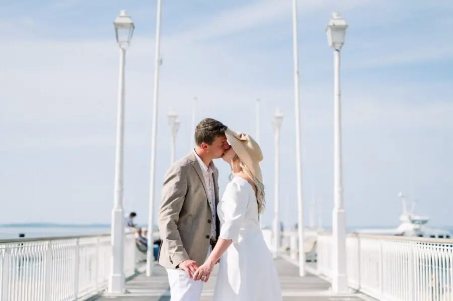
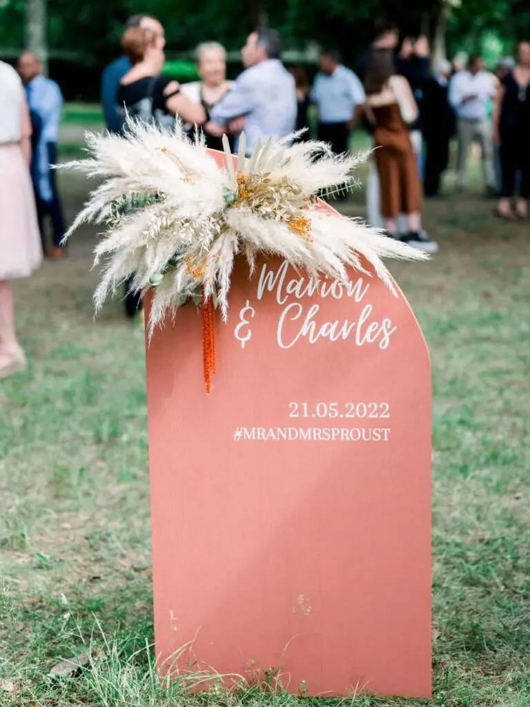
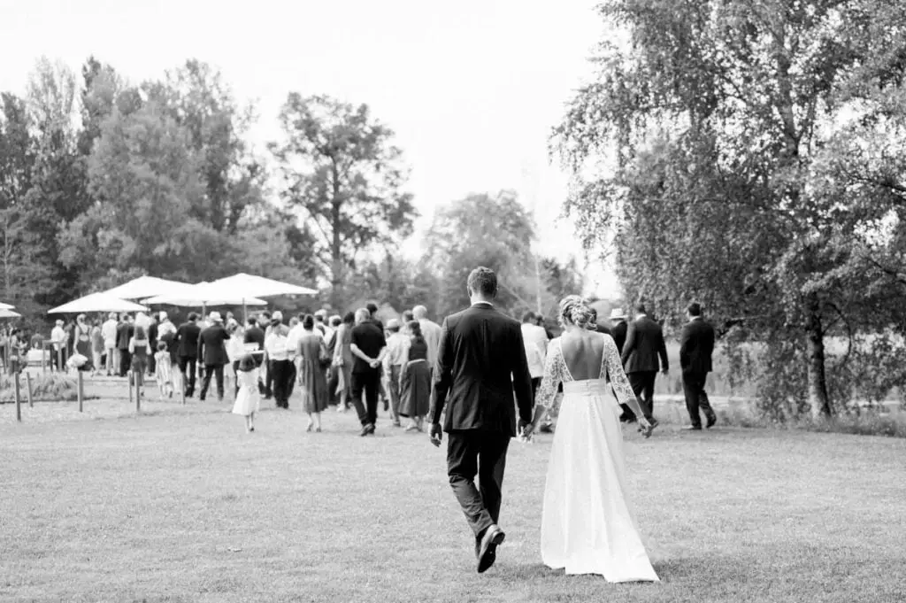
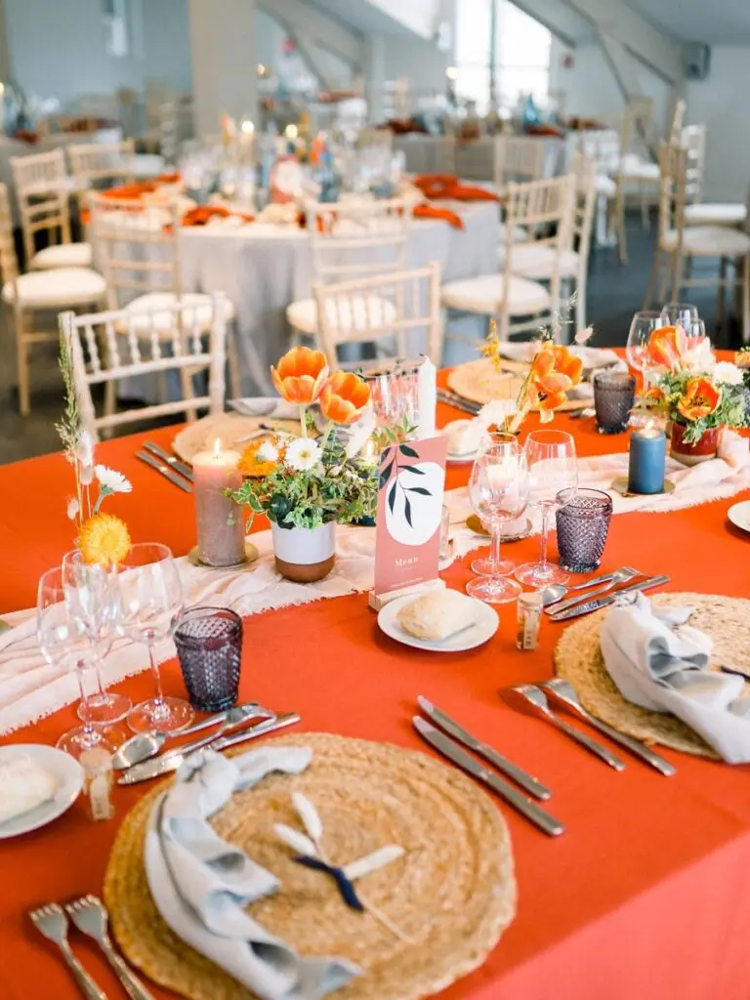
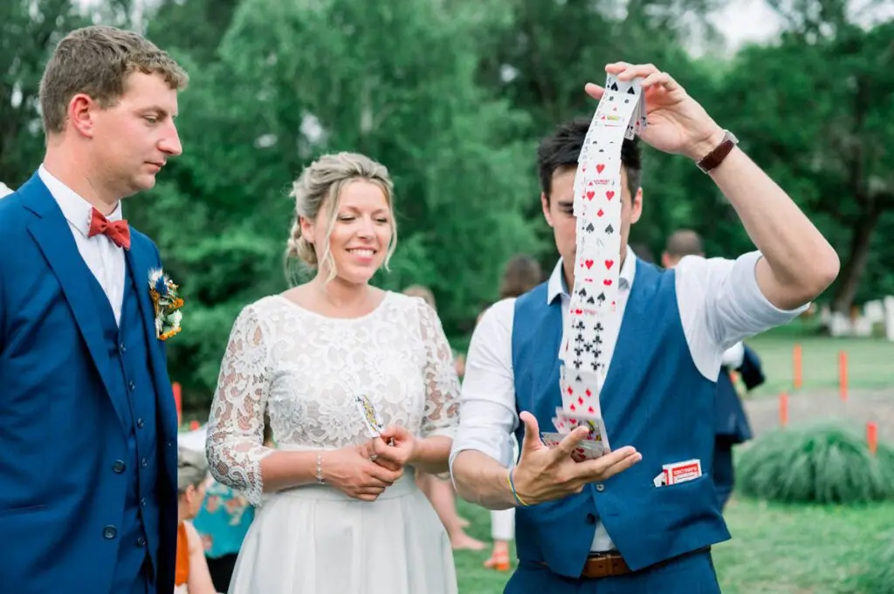

Marion & Charles

Le 25 mai 2022, Marion & Charles se sont dit « oui » pour le reste de leur vie ! Un mariage sur le thème chic et bohème, coloré et raffiné, tout ce qu’on aime…
Une journée sous le signe des traditions mais pas que ! Après des préparatifs aux sources de Caudalie, Marion & Charles se sont unis à la Mairie d’Arcachon, avant de se promettre fidélité et amour devant Dieu. Ils ont donné ensuite rendez-vous à leurs invités au Château Larrivet Haut Brion pour lancer les festivités …
Une journée remplie de rires, de larmes et d’émotions ! Quelle journée !
« Alex nous a organisé un mariage de rêve ! Nous te remercions encore pour ta patience et ta bienveillance. Nous avons beaucoup de chance de l’avoir eu avec nous pour notre mariage 💕 »Marion & Charles
par Tristan Perrier









Charlotte & Arnaud
C’est à leur domicile qu’Arnaud et Charlotte ont célébré leur union . Avoir le même nom leur tenait très à coeur afin d’accomplir tous leurs projets personnels et…
Lire leur histoire
Delphine & Haythem
Coordination du Jour J ? Bien sûr, je m’occupe également que de cette partie si vous avez tout géré avant. Delphine & Haythem, les mariés ont préparé leur mariage chic…
Lire leur histoire